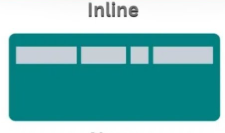

Como criar diferentes layouts
Display block
Aqui esta usando display block, que vem por padrao no html, mas nao sao todos que usam. tem a caracteristica de que qualquer elemento ocupe a lina toda e os elementos ficam empilhados
Display Inline
No display inline os elementos seguem uma linha nao havendo espaço entre eles, entao esse paragrafo termina aqui.
E o outro começa aqui

Entao os elementos nao quebram linha, não é definir o width nem heigth e nao é possivel mudar o espacamento entre elementos.
Display Inline-Block
Como no nome, é um inline em que pode mudar a largura e comprimento dos elementos, ainda segue a lógica de que os elementos seguem uma linha mas agr ajusta conforme o tamanho do elemento
no paragrado de cima ocupou a tela toda
Imagino que é muito usado em sites de loja em que os produtos ficam lado a lado e tem um tamanho padronizado
Display Grid
Da muita liberdade para posicionar as coisas no local que quiser
Acesse gridbyexample.com para ver mais